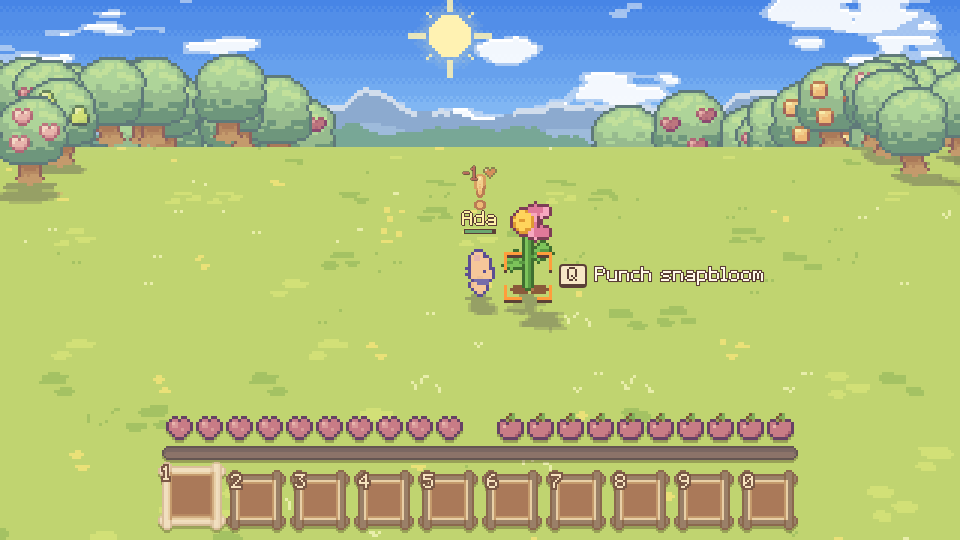
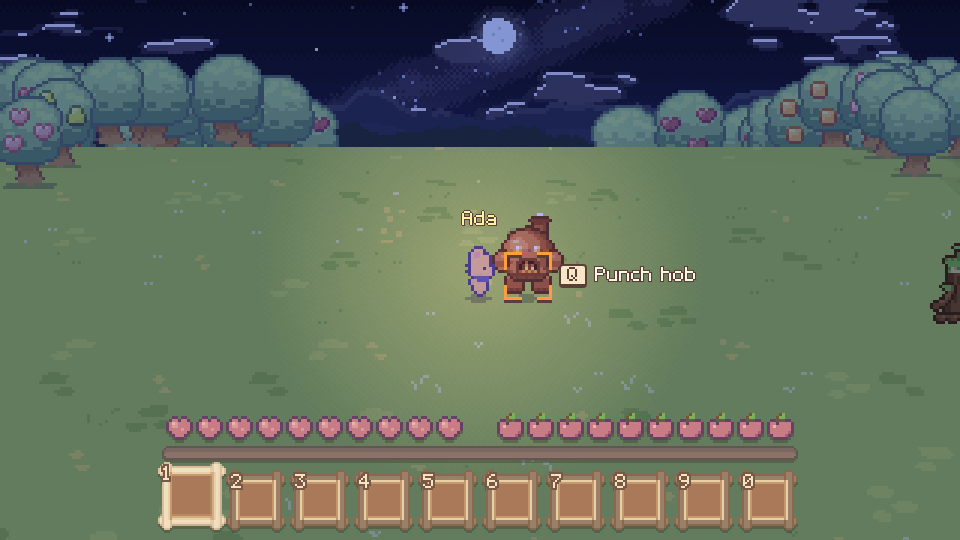
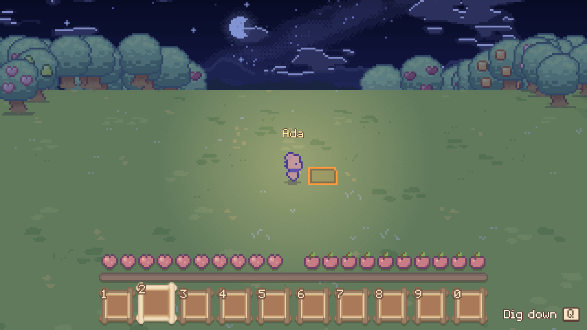
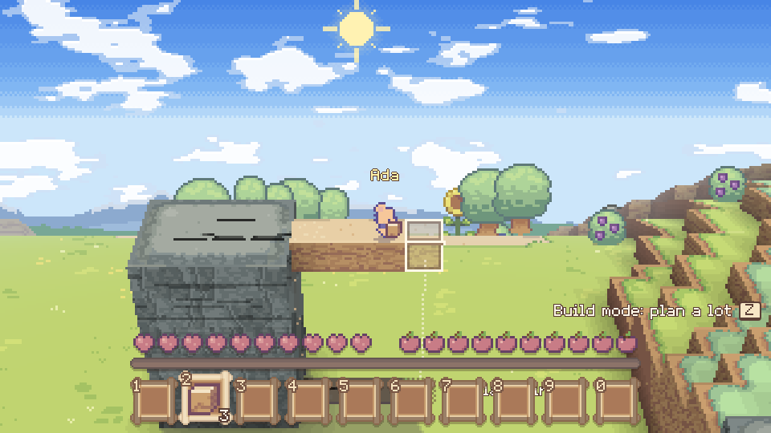
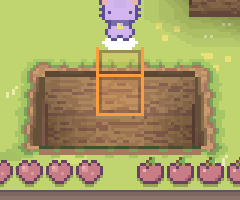
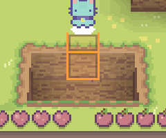
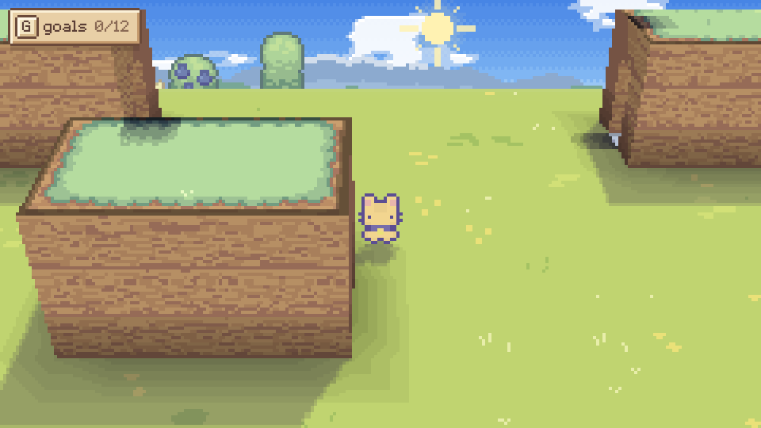
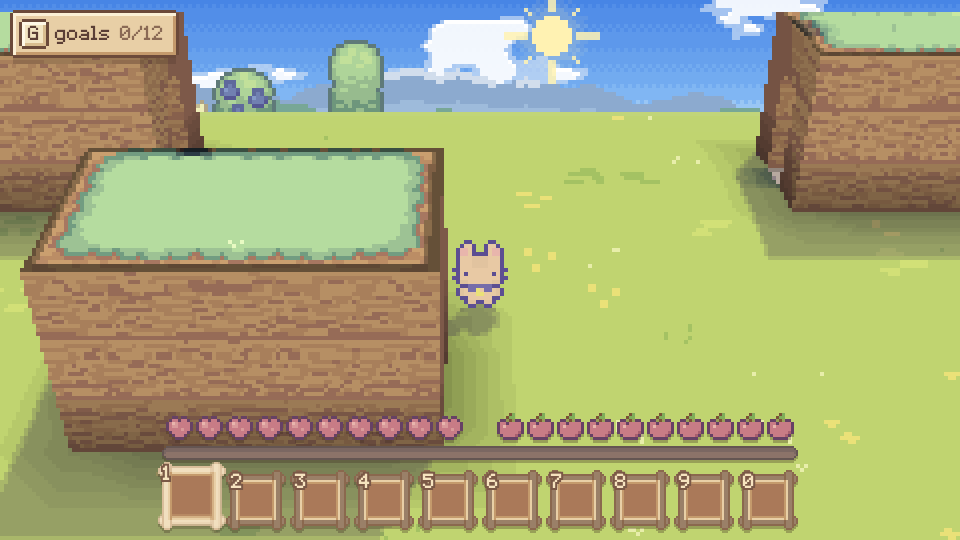

2026-11-25
What's new: creatures, a new sky, and bridges in the air
All of it is in the game now: play it.
Grumblestump
By day it's a stump with its eyes shut. At night it shuffles after you and slams the ground: step back when its arms go up.

A grumblestump slamming at night, two hearts gone
Snapbloom
Rare, by day. It creeps up, rears back and bites. At night it's just a flower.

A snapbloom biting: -1
The hob, on your side
Make one at a workbench (8 stone and a campfire) and set it down. It follows you, and burns any wild creature that comes too close.

Your hob by your side at night, a grumblestump coming in
A new sky
A sun with pixel rays, a moon that changes phase day by day, stars and a milky band at night.

The night sky: the moon, the stars, the milky band
Bridges in the air
With earth or stone in hand, aim past a cliff's edge and press E: the block goes in at your own level. Step on it, place the next one.

A bridge of earth built out from a stone pillar
Cleaner cliffs and caves
No more dark border round holes and cliff tops. Cave mouths cast a soft shadow, and a cave keeps its real colours.


A hole, before and after


A cave mouth, before and after
Also new
- Ores: coal, copper, iron, gold and titanium in the stone, deeper ones rarer. Gold and titanium need an iron pickaxe or better, or they crumble.
- Tool tiers: wood, stone, iron and titanium axes and pickaxes. Better ones dig faster.
- Gustling: rare, by day. It snatches up to five of what you hold and runs. Hit it while it spins.
- Every creature has its own sounds: a warning, a blow, a cry.
- View distance is a slider, 9 to 65 tiles (Picture settings).
- New music: *Slow Tide* in the morning, *Bright Dream* by day.
- Walking off a ledge is one smooth fall. A fall's damage shows as you land.
- A swimmer glides into place at swimming pace.